02/ 15
Zespół wielofunkcyjny · Wrocław, Szczepin · 2026
Zespół wielofunkcyjny na placu Jana Pawła II
Bryła domykająca historyczny kwartał — brama do Szczepina, której parter wpuszcza miasto do wnętrza.

Budynek domyka historyczny kwartał przy jednym z najważniejszych węzłów komunikacyjnych Wrocławia. Wysokość zróżnicowana od 4 do 13 kondygnacji pozwala płynnie przejść od skali biurowców do zabudowy osiedlowej.
Subtrakcja bryły wpuszcza przestrzeń publiczną do wnętrza kwartału, a pasaż w parterze łączy osiedle z przystankami i terenami nad Fosą Miejską. Zieleń wprowadzona do atrium i na tarasy użytkowe odpowiada na niedobór zieleni wysokiej i przegrzewanie się placu.
Hybrydowy program — mieszkania dla młodych i seniorów, kultura, handel i funkcje związane ze zdrowiem — ma utrzymać życie budynku także po godzinach pracy okolicznych biur.
Otwarty parter, który zasysa ludzi z placu.
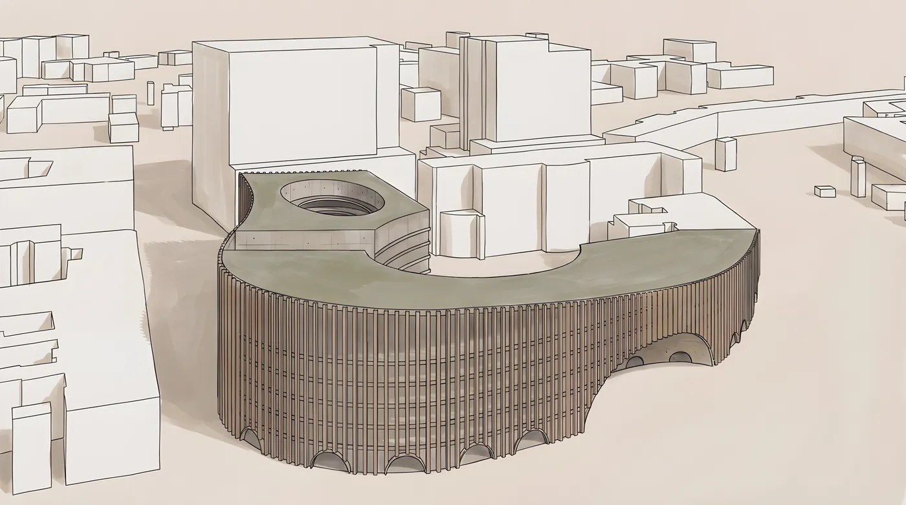
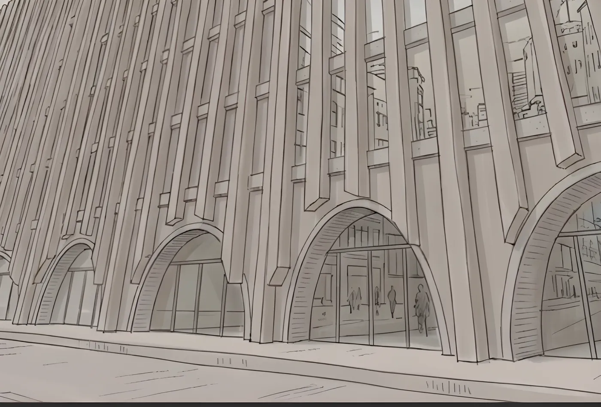
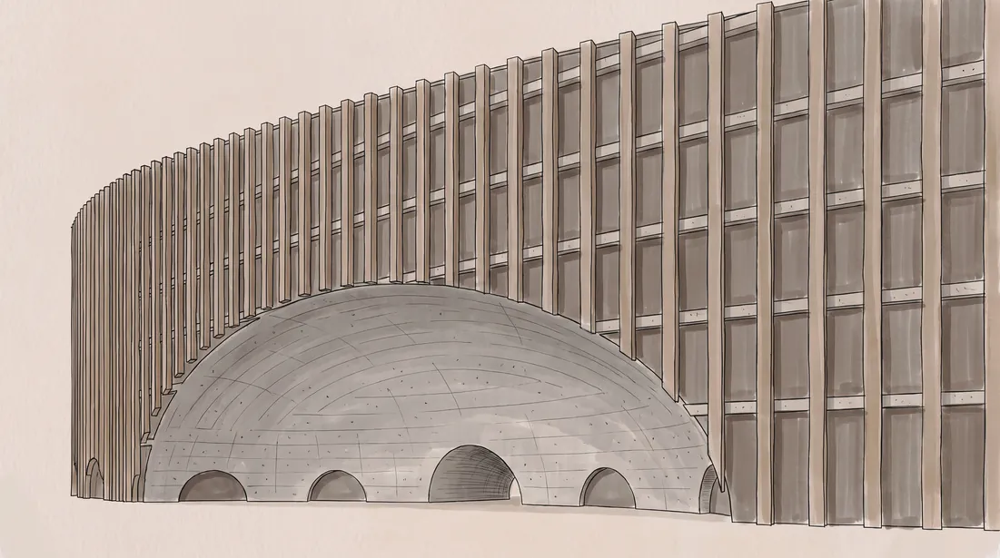
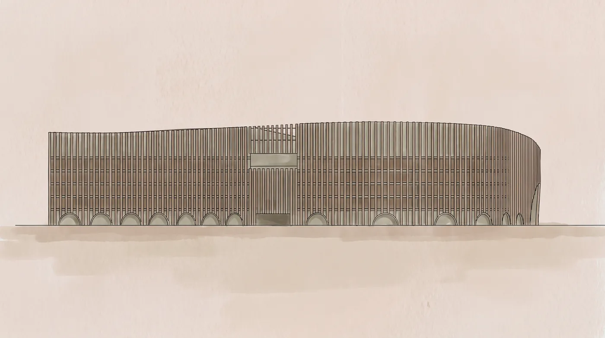
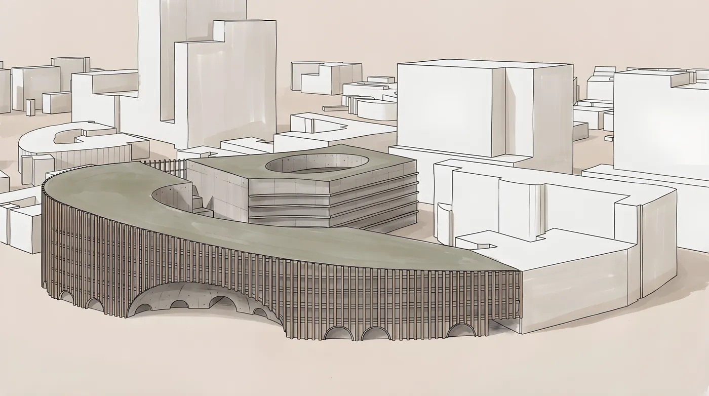
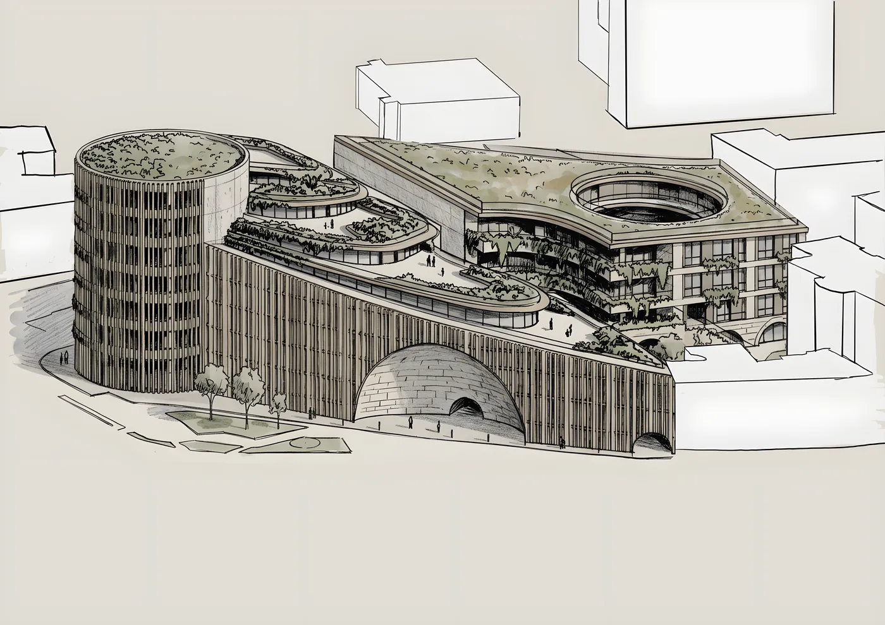
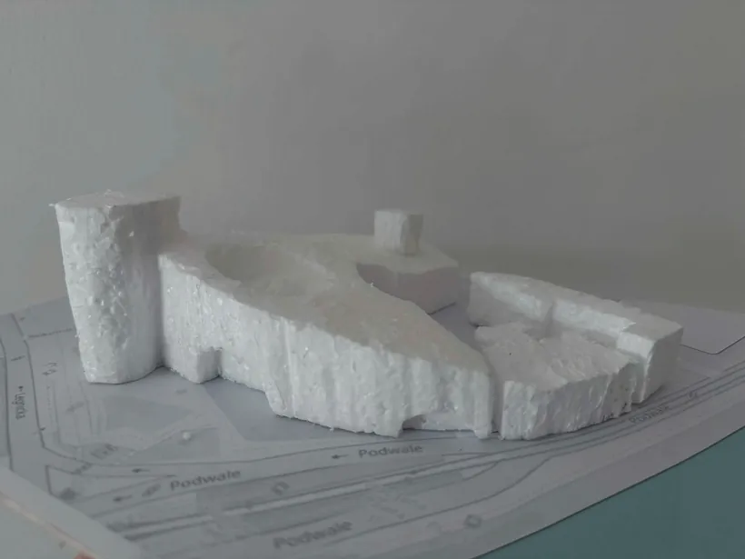
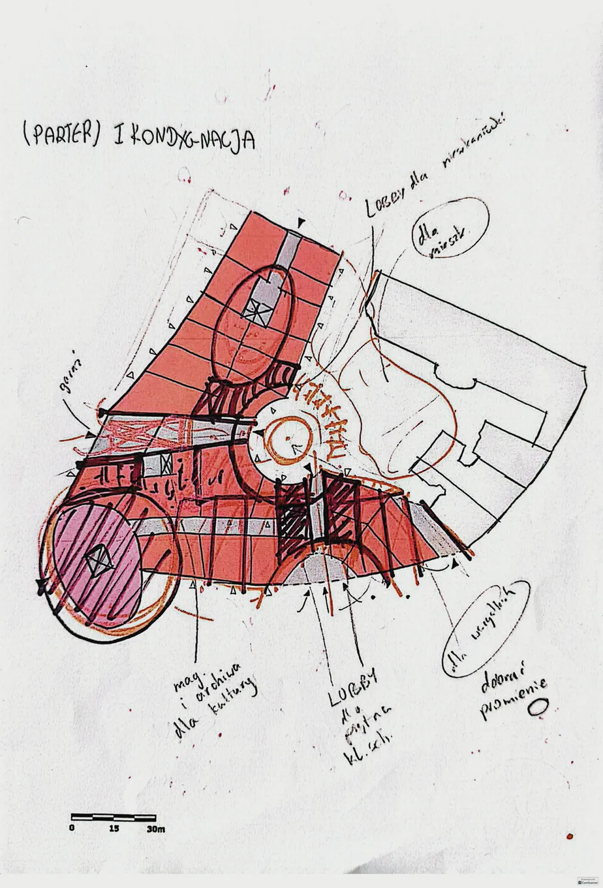
—
Plansze
Plansze projektowe w pełnej rozdzielczości — kliknij, aby powiększyć.

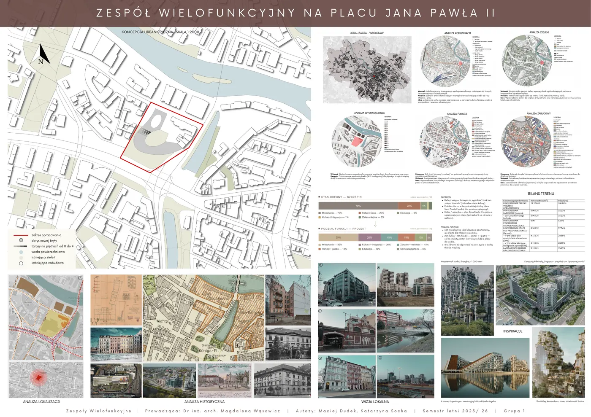

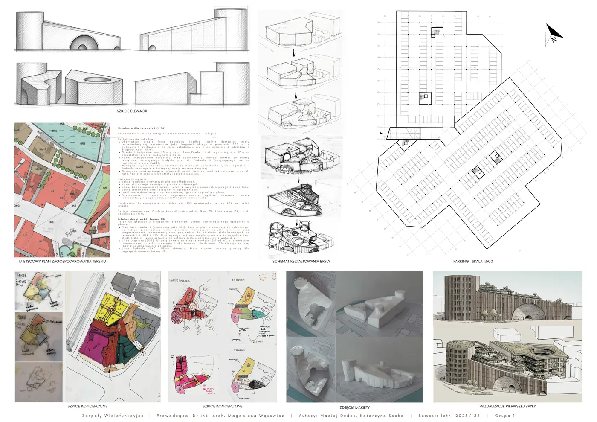

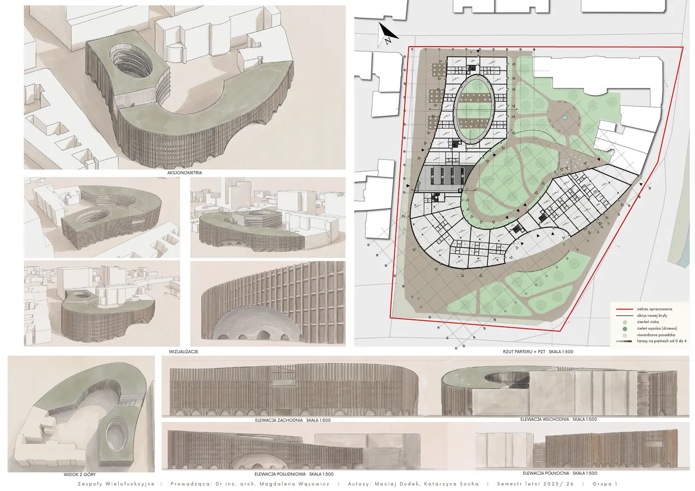

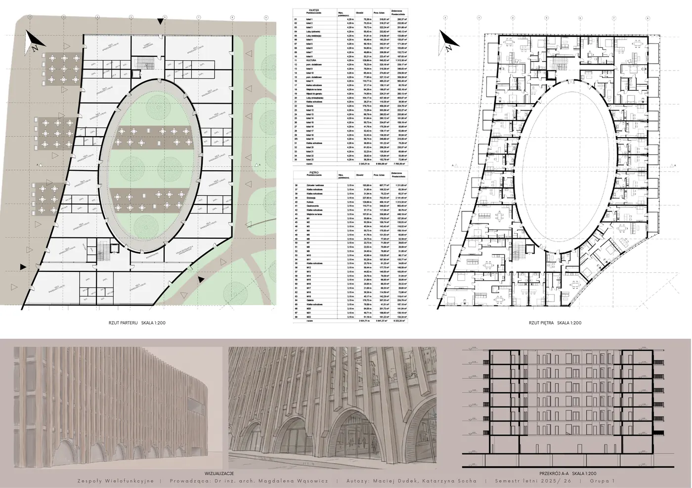

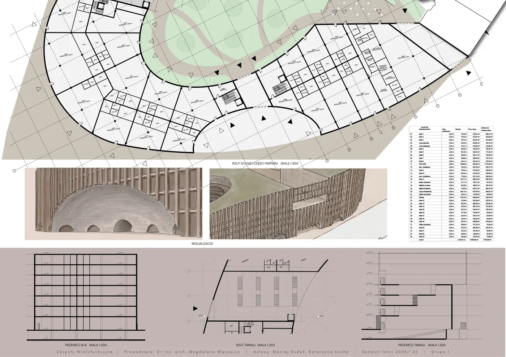